Workflow Overview
Harnice supports different kinds of products, each of which have basic, distinct properties and store information in their respective ways.
When you "run" Harnice, you're taking the input files of one product, and per a set of rules that you define, output files are generated. This process is called render.
Some products have input and output files that are compatible with each other. Here's the basic workflow.

each gray bar is a render operation on a different product, orange is a user-defined set of render instructions, and blue is a file.
Feature Tree (product as-intended)
Most products have something called a feature tree, which is inspired by 3D cad modeling. It's written directly in Python, and besides from some housekeeping that goes on in the background, is the bulk of what's happening when you render a product.
Inside the feature tree is where you can write your rules on how to build your product. Here's some ideas about how you can express your build intent in logical language:
- If a harness mates with a device's ethernet socket, specifiy an RJ45 connector on that end of the harness.
- If a harness contains signals that drive a safety-critical valve, clad that harness with red sleeving.
- If a system has more than 9 output devices connected to an input device that has 8 inputs, throw an error.
- If a wire is conducting a thermocouple signal, use special cable and contacts.
- Specify a label to be applied to a harness whose text is derived from the name of the harness's mating device.
- If part x is called out as a component of a harness, and part x always requires tool y set to z, add a buildnote with a leader to x that says y-z.
Here's the default feature tree that you get when you try to render a product for the first time. You'd add your logic in here somewhere.
Keep an eye out for how the script references files for the product it's operating on, for other products, and how it generates outputs all in the same stroke as performing the derivation of the part.
Default harness feature tree
import os
from harnice import fileio, state
from harnice.utils import (
circuit_utils,
formboard_utils,
note_utils,
library_utils,
feature_tree_utils,
)
from harnice.lists import instances_list, post_harness_instances_list, rev_history
{build_macro_block}
# ===========================================================================
# HARNESS BUILD RULES
# ===========================================================================
# example: assign a special contact to one specific conductor
instances = fileio.read_tsv("instances list")
circuit_instance = None
connector_at_end_a = None
for instance in instances:
if instance.get("channel_group") == "channel-MIC2.out1-PREAMP1.in2":
if instance.get("signal_of_channel_type") == "pos":
if instance.get("item_type") == "circuit":
circuit_instance = instance
connector_at_end_a = instances_list.attribute_of(
instance.get("node_at_end_a"), "connector_group"
)
new_instance_name = (
f"{circuit_instance.get('instance_name')}-special_contact"
)
circuit_id = int(circuit_instance.get("circuit_id"))
instances_list.new_instance(
new_instance_name,
{
"bom_line_number": True,
"mpn": "TXPS20",
"item_type": "contact",
"location_type": "node",
"circuit_id": circuit_id,
"connector_group": connector_at_end_a,
},
)
circuit_utils.squeeze_instance_between_ports_in_circuit(
new_instance_name, circuit_id, 1
)
# example: add a backshell
for instance in instances:
if instance.get("instance_name") in ["X1.B.conn", "PREAMP2.in2.conn"]:
instances_list.new_instance(
f"{instance.get('connector_group')}.bs",
{
"bom_line_number": True,
"mpn": "M85049-90_9Z03",
"item_type": "backshell",
"parent_instance": instance.get("instance_name"),
"location_type": "node",
"connector_group": instance.get("connector_group"),
"parent_csys_instance_name": (
instances_list.instance_in_connector_group_with_item_type(
instance.get("connector_group"), "node"
)
).get("instance_name"),
"parent_csys_outputcsys_name": "origin",
"lib_repo": "https://github.com/harnice/harnice",
},
)
instances_list.modify(
instance.get("instance_name"),
{
"parent_csys_instance_name": f"{instance.get('connector_group')}.bs",
"parent_csys_outputcsys_name": "connector",
},
)
# ===========================================================================
# IMPORT PARTS FROM LIBRARY FOR GENERAL USE
# ===========================================================================
for instance in fileio.read_tsv("instances list"):
if instance.get("item_type") in ["connector", "backshell"]:
if instance.get("instance_name") not in ["X100"]:
if instance.get("mpn") not in ["TXPA20"]:
library_utils.pull(instance)
# ===========================================================================
# PROCESS HARNESS LAYOUT GRAPH
# ===========================================================================
formboard_utils.validate_nodes()
instances = fileio.read_tsv("instances list")
for instance in instances:
if instance.get("item_type") == "cable":
for instance2 in instances:
if instance2.get("parent_instance") == instance.get("instance_name"):
if instance2.get("item_type") == "conductor":
instances_list.modify(
instance.get("instance_name"),
{
"node_at_end_a": instances_list.instance_in_connector_group_with_item_type(
instances_list.attribute_of(
instance2.get("node_at_end_a"), "connector_group"
),
"node",
).get("instance_name"),
"node_at_end_b": instances_list.instance_in_connector_group_with_item_type(
instances_list.attribute_of(
instance2.get("node_at_end_b"), "connector_group"
),
"node",
).get("instance_name"),
},
)
break
for instance in fileio.read_tsv("instances list"):
if instance.get("item_type") in ["conductor", "cable", "net-channel"]:
formboard_utils.map_instance_to_segments(instance)
for instance in fileio.read_tsv("instances list"):
if instance.get("item_type") in ["conductor", "cable"]:
length = 0
for instance2 in fileio.read_tsv("instances list"):
if instance2.get("parent_instance") == instance.get("instance_name"):
if instance2.get("length", "").strip():
if instance.get("item_type") == "conductor":
length += float(instance2.get("length").strip())
else:
length = max(length, float(instance2.get("length").strip()))
instances_list.modify(instance.get("instance_name"), {"length": length})
# ===========================================================================
# ASSIGN BOM LINE NUMBERS
# ===========================================================================
for instance in fileio.read_tsv("instances list"):
if instance.get("item_type") in ["connector", "cable", "backshell"]:
instances_list.modify(instance.get("instance_name"), {"bom_line_number": True})
instances_list.assign_bom_line_numbers()
# ===========================================================================
# ASSIGN PRINT NAMES
# ===========================================================================
for x in range(2):
for instance in fileio.read_tsv("instances list"):
if instance.get("item_type") == "connector_cavity":
instance_name = instance.get("instance_name", "")
print_name = f"cavity {instance_name.split('.')[-1] if '.' in instance_name else instance_name}"
instances_list.modify(instance_name, {"print_name": print_name})
elif instance.get("item_type") in ["conductor", "conductor-segment"]:
instances_list.modify(
instance.get("instance_name"),
{
"print_name": f"'{instance.get('cable_identifier')}' of '{instances_list.attribute_of(instance.get('cable_group'), 'print_name')}'"
},
)
elif instance.get("item_type") == "net-channel":
print_name = f"'{instance.get('this_channel_from_device_channel_id')}' of '{instance.get('this_channel_from_device_refdes')}' to '{instance.get('this_channel_to_device_channel_id')}' of '{instance.get('this_channel_to_device_refdes')}'"
instances_list.modify(
instance.get("instance_name"), {"print_name": print_name}
)
elif instance.get("item_type") == "net-channel-segment":
print_name = f"'{instances_list.attribute_of(instance.get('parent_instance'), 'this_channel_from_device_channel_id')}' of '{instances_list.attribute_of(instance.get('parent_instance'), 'this_channel_from_device_refdes')}' to '{instances_list.attribute_of(instance.get('parent_instance'), 'this_channel_to_device_channel_id')}' of '{instances_list.attribute_of(instance.get('parent_instance'), 'this_channel_to_device_refdes')}'"
instances_list.modify(
instance.get("instance_name"), {"print_name": print_name}
)
elif instance.get("item_type") == "connector":
print_name = f"{instance.get('connector_group')}"
instances_list.modify(
instance.get("instance_name"), {"print_name": print_name}
)
elif instance.get("item_type") == "cable-segment":
print_name = f"{instance.get('cable_group')}"
instances_list.modify(
instance.get("instance_name"), {"print_name": print_name}
)
elif instance.get("item_type") == "contact":
print_name = instance.get("mpn")
instances_list.modify(
instance.get("instance_name"), {"print_name": print_name}
)
else:
instances_list.modify(
instance.get("instance_name"),
{"print_name": instance.get("instance_name")},
)
# ===========================================================================
# ADD BUILD NOTES
# ===========================================================================
for rev_row in fileio.read_tsv("revision history"):
if rev_row.get("rev") == state.rev:
note_utils.make_rev_history_notes(rev_row)
for instance in fileio.read_tsv("instances list"):
for note in note_utils.get_lib_build_notes(instance):
note_utils.new_note(
"build_note", note, affectedinstances=[instance.get("instance_name")]
)
note_utils.assign_buildnote_numbers()
# example: add notes to describe actions
# note_utils.new_note(
# "build_note",
# "do this",
# affectedinstances=["X1.B.conn"]
# )
# note_utils.new_note(
# "build_note",
# "do that"
# )
# example: combine buildnotes if their texts are similar
# note_utils.combine_notes("Torque backshell to connector at 40 in-lbs","Torque backshell to connector at about 40 in-lbs")
# ===========================================================================
# PUT TOGETHER FORMBOARD SVG INSTANCE CONTENT
# ===========================================================================
instances = fileio.read_tsv("instances list")
note_instances = []
for instance in instances:
if instance.get("item_type") == "note":
note_instances.append(note_utils.parse_note_instance(instance))
formboard_overview_instances = []
formboard_detail_instances = []
for instance in instances:
if instance.get("item_type") not in [
"connector",
"backshell",
"segment",
"node",
"origin",
]:
continue
formboard_overview_instances.append(instance)
formboard_detail_instances.append(instance)
detail_flag_note_counter = 1
overview_flag_note_counter = 1
if instance.get("item_type") in ["connector", "backshell"]:
formboard_detail_instances.append(
note_utils.make_bom_flagnote(
instance, f"flagnote-{detail_flag_note_counter}"
)
)
detail_flag_note_counter += 1
formboard_detail_instances.append(
note_utils.make_part_name_flagnote(
instance, f"flagnote-{detail_flag_note_counter}"
)
)
detail_flag_note_counter += 1
if instance.get("item_type") == "connector":
formboard_overview_instances.append(
note_utils.make_part_name_flagnote(
instance, f"flagnote-{overview_flag_note_counter}"
)
)
overview_flag_note_counter += 1
for note_instance in note_instances:
if note_instance.get("note_type") == "build_note":
if instance.get("instance_name") in note_instance.get(
"note_affected_instances"
):
formboard_detail_instances.append(
note_utils.make_buildnote_flagnote(
note_instance, instance, f"flagnote-{detail_flag_note_counter}"
)
)
detail_flag_note_counter += 1
if note_instance.get("note_type") == "rev_change_callout":
if instance.get("instance_name") in note_instance.get(
"note_affected_instances"
):
formboard_detail_instances.append(
note_utils.make_rev_change_flagnote(
note_instance, instance, f"flagnote-{detail_flag_note_counter}"
)
)
detail_flag_note_counter += 1
# ===========================================================================
# BUILD HARNESS OUTPUTS
# ===========================================================================
instances = fileio.read_tsv("instances list")
scales = {"A": 0.25, "B": 0.3, "C": 1}
feature_tree_utils.run_macro(
"bom_exporter_bottom_up",
"harness_artifacts",
"https://github.com/harnice/harnice",
artifact_id="bom-1",
)
feature_tree_utils.run_macro(
"standard_harnice_formboard",
"harness_artifacts",
"https://github.com/harnice/harnice",
artifact_id="formboard-overview",
scale=scales.get("A"),
input_instances=formboard_overview_instances,
)
feature_tree_utils.run_macro(
"standard_harnice_formboard",
"harness_artifacts",
"https://github.com/harnice/harnice",
artifact_id="formboard-detail",
scale=scales.get("C"),
input_instances=formboard_detail_instances,
)
feature_tree_utils.run_macro(
"segment_visualizer",
"harness_artifacts",
"https://github.com/harnice/harnice",
artifact_id="cable_layout-1",
scale=scales.get("A"),
item_type="cable-segment",
segment_spacing_inches=0.1,
)
feature_tree_utils.run_macro(
"segment_visualizer",
"harness_artifacts",
"https://github.com/harnice/harnice",
artifact_id="conductor-layout-1",
scale=scales.get("A"),
item_type="conductor-segment",
segment_spacing_inches=0.1,
)
feature_tree_utils.run_macro(
"segment_visualizer",
"harness_artifacts",
"https://github.com/harnice/harnice",
artifact_id="channel-layout-1",
scale=scales.get("B"),
item_type="net-channel-segment",
segment_spacing_inches=0.1,
)
feature_tree_utils.run_macro(
"circuit_visualizer",
"harness_artifacts",
"https://github.com/harnice/harnice",
artifact_id="circuitviz-1",
input_circuits=instances,
)
feature_tree_utils.run_macro(
"revision_history_table",
"harness_artifacts",
"https://github.com/harnice/harnice",
artifact_id="revhistory-1",
)
build_notes_list_instances = []
for instance in fileio.read_tsv("instances list"):
if (
instance.get("item_type") == "note"
and instance.get("note_type") == "build_note"
):
build_notes_list_instances.append(instance)
feature_tree_utils.run_macro(
"build_notes_table",
"harness_artifacts",
"https://github.com/harnice/harnice",
artifact_id="build_notes_table-1",
input_instances=build_notes_list_instances,
)
feature_tree_utils.run_macro(
"pdf_generator",
"harness_artifacts",
"https://github.com/harnice/harnice",
artifact_id="pdf_drawing-1",
scales=scales,
)
{push_block}
# for convenience, move any pdf to the base directory of the harness
feature_tree_utils.copy_pdfs_to_cwd()
Default system feature tree
from harnice import fileio
from harnice.utils import system_utils, feature_tree_utils
from harnice.lists import instances_list, manifest, channel_map, circuits_list, disconnect_map
#===========================================================================
# KICAD PROCESSING
#===========================================================================
feature_tree_utils.run_macro("kicad_pro_to_bom", "system_builder", "https://github.com/harnice/harnice", artifact_id="bom-1")
#===========================================================================
# COLLECT AND PULL DEVICES FROM LIBRARY
#===========================================================================
system_utils.make_instances_from_bom()
#===========================================================================
# CHANNEL MAPPING
#===========================================================================
feature_tree_utils.run_macro(
"kicad_pro_to_system_connector_list",
"system_builder",
"https://github.com/harnice/harnice",
artifact_id="system-connector-list-1"
)
manifest.new()
channel_map.new()
#add manual channel map commands here. key=(from_device_refdes, from_device_channel_id)
#channel_map.map(("MIC3", "out1"), ("PREAMP1", "in2"))
#map channels to other compatible channels by sorting alphabetically then mapping compatibles
feature_tree_utils.run_macro(
"basic_channel_mapper",
"system_builder",
"https://github.com/harnice/harnice",
artifact_id="channel-mapper-1"
)
#if mapped channels must connect via disconnects, add the list of disconnects to the channel map
system_utils.add_chains_to_channel_map()
#map channels that must pass through disconnects to available channels inside disconnects
disconnect_map.new()
#add manual disconnect map commands here
#disconnect_map.already_assigned_disconnects_set_append(('X1', 'ch0'))
#map channels passing through disconnects to available channels inside disconnects
feature_tree_utils.run_macro(
"disconnect_mapper",
"system_builder",
"https://github.com/harnice/harnice",
artifact_id="disconnect-mapper-1"
)
# ensure channels that are required to be mapped through disconnects are in fact done so
disconnect_map.ensure_requirements_met()
#process channel and disconnect maps to make a list of every circuit in your system
circuits_list.new()
# ===========================================================================
# INSTANCES LIST
# ===========================================================================
system_utils.make_instances_for_connectors_cavities_nodes_channels_circuits()
# assign mating connectors
for instance in fileio.read_tsv("instances list"):
if instance.get("item_type") == "connector":
if instance.get("this_instance_mating_device_connector_mpn") == "XLR3M":
instances_list.modify(
instance.get("instance_name"),
{
"mpn": "D38999_26ZA98PN",
"lib_repo": "https://github.com/harnice/harnice",
},
)
elif instance.get("this_instance_mating_device_connector_mpn") == "XLR3F":
instances_list.modify(
instance.get("instance_name"),
{
"mpn": "D38999_26ZB98PN",
"lib_repo": "https://github.com/harnice/harnice",
},
)
elif instance.get("this_instance_mating_device_connector_mpn") == "DB25M":
instances_list.modify(
instance.get("instance_name"),
{
"mpn": "D38999_26ZC35PN",
"lib_repo": "https://github.com/harnice/harnice",
},
)
elif instance.get("this_instance_mating_device_connector_mpn") == "DB25F":
instances_list.modify(
instance.get("instance_name"),
{
"mpn": "D38999_26ZE6PN",
"lib_repo": "https://github.com/harnice/harnice",
},
)
# ===========================================================================
# ASSIGN CONDUCTORS
# ===========================================================================
# add one conductor per circuit
for instance in fileio.read_tsv("instances list"):
if instance.get("item_type") == "circuit":
circuit_id = instance.get("circuit_id")
conductor_name = f"conductor-{circuit_id}"
instances_list.new_instance(
conductor_name,
{
"net": instance.get("net"),
"item_type": "conductor",
"location_type": "segment",
"channel_group": instance.get("channel_group"),
"node_at_end_a": circuit_utils.instance_of_circuit_port_number(
circuit_id, 0 # assume the only existing ports at this point are cavities at 0 and 1
),
"node_at_end_b": circuit_utils.instance_of_circuit_port_number(
circuit_id, 1
),
"this_channel_from_channel_type": instance.get("this_channel_from_channel_type"),
"this_channel_to_channel_type": instance.get("this_channel_to_channel_type"),
"signal_of_channel_type": instance.get("signal_of_channel_type")
},
)
circuit_utils.squeeze_instance_between_ports_in_circuit(
conductor_name, instance.get("circuit_id"), 1
)
# define the cable types we want to use here
audio_cable = {
"lib_repo": "https://github.com/harnice/harnice",
"mpn": "8762 0602000",
"lib_subpath": "belden",
}
# assign conductors to cable-id
cable_id_counter = 1
instances = fileio.read_tsv("instances list")
for net in instances_list.list_of_uniques("net"):
for chgroup in instances_list.list_of_uniques("channel_group"):
for instance in instances:
cable_name = f"cable-{cable_id_counter}"
if instance.get("net") != net:
continue
if instance.get("channel_group") != chgroup:
continue
if instance.get("item_type") != "conductor":
continue
if chtype.parse(instance.get("this_channel_from_channel_type")) in chtype.is_or_is_compatible_with((1, 'https://github.com/harnice/harnice')):
if instance.get("signal_of_channel_type") in ["pos"]:
circuit_utils.assign_cable_conductor(
cable_name,
("pair_1", "white"),
instance.get("instance_name"),
audio_cable,
instance.get("net")
)
if instance.get("signal_of_channel_type") in ["neg"]:
circuit_utils.assign_cable_conductor(
cable_name,
("pair_1", "black"),
instance.get("instance_name"),
audio_cable,
instance.get("net")
)
cable_id_counter += 1 # in this system, each channel gets its own cable.
#===========================================================================
# SYSTEM DESIGN CHECKS
#===========================================================================
connector_list = fileio.read_tsv("system connector list")
circuits_list = fileio.read_tsv("circuits list")
#check for circuits with no connectors
system_utils.find_connector_with_no_circuit(connector_list, circuits_list)
# ===========================================================================
# ADD STYLING AND PRINT NAMES TO CHANNELS
# ===========================================================================
# assign styling to channels
audio_channel_style = {
"base_color": "#D59A10",
}
shield_channel_style = {
"base_color": "#4039A1",
}
for instance in fileio.read_tsv("instances list"):
if instance.get("item_type") in ["channel", "net-channel"]:
if instance.get("this_channel_from_channel_type") in ["(1, 'https://github.com/harnice/harnice')", "(2, 'https://github.com/harnice/harnice')"]:
instances_list.modify(
instance.get("instance_name"),
{
"appearance": audio_channel_style
}
)
if instance.get("this_channel_from_channel_type") == "(5, 'https://github.com/harnice/harnice')":
instances_list.modify(
instance.get("instance_name"),
{
"appearance": shield_channel_style
}
)
for instance in fileio.read_tsv("instances list"):
if instance.get("item_type") == "net-channel":
instances_list.modify(instance.get("instance_name"), {
"print_name_at_end_a": instance.get("this_net_from_device_channel_id"),
"print_name_at_end_b": instance.get("this_net_to_device_channel_id")
})
# ===========================================================================
# SYSTEM ARTIFACT GENERATORS
# ===========================================================================
# map channels passing through disconnects to available channels inside disconnects
# prepare the channel map block diagram overlay
chmap_instances = []
for instance in fileio.read_tsv("instances list"):
if instance.get("item_type") == "net-channel":
chmap_instances.append(instance)
feature_tree_utils.run_macro(
"kicad_sch_net_overlay",
"system_artifacts",
"https://github.com/harnice/harnice",
artifact_id="blockdiagram-chmap-1",
item_type="net-channel",
instances=chmap_instances
)
# for convenience, move any pdf to the base directory of the harness
feature_tree_utils.copy_pdfs_to_cwd()
Instances Lists, Signals Lists (product as-designed)
While having a concise set of rules is important to the definition of a product, it is not always sufficient as complete digital representation of the product. There's a difference between "as-intended" (feature tree) vs "as-designed". Harnice produces "as-designed" documentation for products in various formats depending on the product, but the following is a core Harnice design requirement:
There shall always be one single source-of-truth representing the as-designed product, from which all outputs or dependencies are derived.
Here are the "as-designed" filetypes of each designable product:
| Product | As-designed source of truth |
|---|---|
| systems, harnesses | instances list |
| device, disconnect | signals list |
(the other products have more than one but I'm not sure how to defend why that's ok at time of writing)
More information about these:
Instances Lists
Interacting with Instances Lists
An instances list is a list of every physical or notional item, idea, note, part, instruction, circuit, drawing element, thing, concept literally anything that describes how to build that harness or system.
Instances lists are the single comprehensive source of truth for the product you are working on. Other documents like the Feature Tree, etc, build this list, and all output documentation are derived from it.
Columns
Columns are automatically generated when instances_list.new() is called. Additional columns are not supported and may result in an error when parsing.
the physical harness (represented by a net in Kicad) that this instance is part of
the unique name of this instance
the non-unique, human-readable name of this instance, used for printing on output documents
if this instance represents a physical procurable good, it gets assigned a line number on a bill of materials
manufacturer of this instance
manufacturer part number
connector, backshell, whatever
general purpose reference
each instance is either better represented by one or ther other
the group of segments that this instance is part of
the sequential id of this item in its segment group
a group of co-located parts (connectors, backshells, nodes)
other instances associated with this one because they are part of the same channel will share this value
which signal this component is electrically connected to
the sequential id of this item in its signal chain
derived from formboard definition
derived from formboard definition
human-readable name of this instance if needed, associated with 'node_at_end_a'
human-readable name of this instance if needed, associated with 'node_at_end_b'
the other instance upon which this instance's location is based
the specific output coordinate system of the parent that this instance's location is based
derived from parent_csys and parent_csys_name
derived from parent_csys and parent_csys_name
derived from parent_csys and parent_csys_name
manual add, not nominally used unless it's a flagnote, segment, or node
imported csys children from library attributes file
other instances associated with this one because they are part of the same cable will share this value
which cable is this instance physically bundled inside of
cable unique identifier
derived from formboard definition, the length of a segment
derived from formboard definition, the tolerance on the length of a segment
apparent diameter of a segment <---------- change to print_diameter
see harnice.utils.appearance for details
build_note, rev_note, etc
if there is a counter involved (rev, bom, build_note, etc)
the instance the note applies to. typically don't use this in the instances list, just note_utils
the content of the note
list of instances that are affected by the note
publically-traceable URL of the library this instance is from
path to the instance within the library (directories between the product type and the part number)
description of the instance per the library's revision history
the latest revision of the instance that exists in the remote library
the revision of the instance that is currently used in this project
the status of the instance per the library's revision history
documentation needed
the date this instance was first added to the library
the date this instance was last modified in the library
the date this instance was released in the library, if applicable, per the library's revision history
the name of the person who drew the instance, per the library's revision history
the name of the person who checked the instance, per the library's revision history
a flag to indicate if the imported contents do not match the library's version (it's been locally modified)
recommended build notes that come with the instance from the library
recommended tools that come with the instance from the library
if connector, refdes of the device it plugs into
if connector, name of the connector it plugs into
if connector, mpn of the connector it plugs into
if this instance is a channel, circuit, conductor, etc, the refdes of the device it interfaces with, just within this net
if this instance is a channel, circuit, conductor, etc, the channel id in the device it interfaces with, just within this net
if this instance is a channel, circuit, conductor, etc, the name of the connector it interfaces with, just within this net
if this instance is a channel, circuit, conductor, etc, the refdes of the device it plugs into just within this net
if this instance is a channel, circuit, conductor, etc, the channel id in the device it plugs into, just within this net
if this instance is a channel, circuit, conductor, etc, the name of the connector it plugs into, just within this net
if this instance is a channel, circuit, conductor, etc, the refdes of the device it interfaces with, at the very end of the channel
if this instance is a channel, circuit, conductor, etc, the channel id in the device it interfaces with, at the very end of the channel
if this instance is a channel, circuit, conductor, etc, the refdes of the device it plugs into, at the very end of the channel
if this instance is a channel, circuit, conductor, etc, the channel id in the device it plugs into, at the very end of the channel
if this instance is a channel, circuit, conductor, etc, the type of the channel it interfaces with, at the very end of the channel
if this instance is a channel, circuit, conductor, etc, the type of the channel it plugs into, at the very end of the channel
if this instance is a channel, circuit, conductor, etc, the signal of the channel it interfaces with, at the very end of the channel
the call chain of the function that last modified this instance row
blank cell to visually cut off the previous column
Commands:
Use the following functions by first importing the module in your script like this: then use as written.
instances_list.new_instance(instance_name, instance_data, ignore_duplicates=False)
New Instance
instances_list.new_instance( instance_name, instance_data, ignore_duplicates=False )
Add a new instance to your instances list.
instance_name is a string and must be unique within the list.
instance_data is a dictionary of columns (above). You may or may not include instance_name in this dict, though if you do and it doesn't match the argument, the code will fail.
Setting ignore_duplicates to True will cause the line to pass silently if you try to add an instance with an instance_name that already exists. By default, False, if you do this, the code will raise an error if you try to add a duplicate instance_name.
Args:
instance_name: string, must be unique within the list
instance_data: dictionary of columns (above)
ignore_duplicates: boolean, default False
Returns:
-1 if the instance was added successfully, otherwise raises an error
instances_list.modify(instance_name, instance_data)
Documentation needed.
instances_list.remove_instance(instance_to_delete)
Documentation needed.
instances_list.new()
Documentation needed.
instances_list.assign_bom_line_numbers()
Documentation needed.
instances_list.attribute_of(target_instance, attribute)
Documentation needed.
instances_list.instance_in_connector_group_with_item_type(connector_group, item_type)
Documentation needed.
instances_list.list_of_uniques(attribute)
Documentation needed.
Signals Lists
Interacting with Signals Lists
A Signals List is an exhaustive list of every signal is going into or out of a thing. Signals Lists are the primary way Harnice stores information about devices, and act as the source of truth for devices and disconnects.
Signals List Validation Checks:
(These are automatically validated when you render the device or disconnect that owns the list.)
General Signals List Rules
-
Every signal in the Signals List must be contained by a pre-defined channel type
Channel Types
Channel Types
How are channels mapped?
How to define a new channel type
- In a repository of your choice (or start with harnice_library_public on your own branch), navigate to
library_repo/channel_types/channel_types.csv - If you want channel definitions to be private and are therefore working in a private repository, ensure the repo's path is listed in file
library_locations.csv(located at root of your harnice source code repo). The first column is the URL or traceable path, and the second column is your local path. - If you find the channel_type you're looking for, temporarily note it as a touple in a notepad somewhere with format
(ch_type_id, universal_library_repository). - If you don't find it, make a new one. It's important to try and reduce the number of channel_types in here to reduce complexity, but it's also important that you adhere to strict and true rules about what is allowed to be mapped to what. Modifications and additions to this document should be taken and reviewed very seriously.
chtype.path(channel_type)Resolve the on-disk path to the
channel_types.tsvfile for a given channel type.Args
channel_type: Channel type identifier in standard tuple format(channel_type_id, lib_repo)or any string representation thatparsecan understand (for example"(5, 'https://github.com/harnice/harnice')").
Returns
str: Absolute path to thechannel_types/channel_types.tsvfile inside the library repository that owns the given channel type.
Notes
- This does not filter rows; it only locates the TSV file that defines
all channel types for the given
lib_repo.
chtype.parse(val)Convert stored string into a tuple (chid:int, lib_repo:str). Handles both single tuples and extracts first tuple from lists.
chtype.compatibles(channel_type)Look up other channel types that are declared as compatible with the given channel type.
Args
channel_type: Channel type identifier in standard tuple format(channel_type_id, lib_repo)or any string representation thatparsecan understand.
Returns
list[tuple[int, str]]: List of(channel_type_id, lib_repo)tuples taken directly from thecompatible_channel_typescolumn ofchannel_types.tsv. Returns an empty list if no compatibles are defined or if the channel type cannot be found.
Data format
- The
compatible_channel_typescolumn must be an AST-parseable Python value:- Single tuple:
(1, "library_repo") - List of tuples:
[(1, "library_repo"), (2, "library_repo")]
- Single tuple:
chtype.attribute(channel_type, attribute)Read any additional column from
channel_types.tsvfor a given channel type.Args
channel_type: Channel type identifier in standard tuple format(channel_type_id, lib_repo)or any string representation thatparsecan understand.attribute: Column header name inchannel_types.tsvfor the value you want to read (for example"description","notes","voltage_rating").
Returns
Any: Value stored in the requestedattributecolumn for the matchingchannel_type_id. Returns an empty list[]if the channel type cannot be found.
Notes
- Use this for any per-channel-type metadata you've added as extra columns
beyond the core ones like
channel_type_id,signals, andcompatible_channel_types.
chtype.signals(channel_type)Return the list of signal names associated with a specific channel type.
Args
channel_type: Channel type identifier in standard tuple format(channel_type_id, lib_repo)or any string representation thatparsecan understand.
Returns
list[str]: List of signal names from thesignalscolumn ofchannel_types.tsvfor the matchingchannel_type_id. If the column is blank or the channel type cannot be found, returns an empty list.
Data format
- The
signalscolumn is expected to be a comma-separated string, for example:"CAN_H, CAN_L, SHIELD".
chtype.is_or_is_compatible_with(channel_type)Return the given channel type plus all channel types declared as compatible with it.
Args
channel_type: Channel type identifier in standard tuple format(channel_type_id, lib_repo)or any string representation thatparsecan understand.
Returns
list[tuple[int, str]]: List of(channel_type_id, lib_repo)tuples where the first entry is the parsedchannel_typeitself and the remaining entries are the compatibles returned bycompatibles(channel_type).
Typical use
- Use this when validating or mapping channels and you want to treat a channel type as valid if it is either exactly the requested type or explicitly listed as compatible with it.
- In a repository of your choice (or start with harnice_library_public on your own branch), navigate to
-
Each signal in the signals list must have every other signal defined by its channel type also present in the list.
- you can't just define 'positive' if the channel type requires 'positive' and 'negative'
-
Each signal defined in the list is contained by one or more cavities of connectors.
- you can't "cap off" or not populate one of the signals within a channel because that changes the channel type.
-
Every combination of (channel_id, signal) must be unique within the signals list
- you can’t have two i.e. “ch1, pos” signals on the same device
- if you need to break one signal out onto multiple conductors, you'll need to change the channel type to one that defines multiple conductors (i.e. named "ch1, pos-1")
-
You can’t put signals of the same channel on different connectors
-
this is because doing so breaks a lot of internal assumptions Harnice is making while mapping channels.
-
the following two options are recommended work-arounds:
-
Most correct but confusing: Define one channel type per signal, then manually chmap your channels or write a macro for mapping the channels to their respective destinations.
-
Janky but easiest to understand: Define a connector part number that actually represents multiple connectors, while using cavities to reference each connector.
-
-
Configurable Device Signals List Rules
It is often useful to be able to change the signals list based on how you're using the device.
-
Each possible configuration of a device must define the same number of conductors throughout the device
- Changing a configuration must not alter physical build, form, fit, or function, and thus there shall be no conductors that are added or taken away. Maybe some signals are 'unused', but they have to at least be counted for across all configurations.
-
There can be an unlimited number of configuration variables
- Sometimes just one variable is useful: an SM58 microphone can produce output signals in either balanced vs unbalanced format, depending on how you want to use it.
- Sometimes there are many variables: suppose you have a mixing console with 32 inputs, and each input can accept either mic or line level inputs depending on the configuration, and each accept either in balanced or unbalanced format signals. Because there's a channel-type defined for each of those options, this would imply 64 configuration variables of the mixing console, each mapping to a unique configuration. This allows the auto channel mapper to find compatibles, and also helps the user track how to set up their device.
Disconnect Signals List Rules
-
“A” and “B” channels of the same disconnect must be compatible with each other
- this is to ensure when you actually mate the disconnect that the channels inside will be compatible.
Columns
Columns are automatically generated when signals_list.new() is called. Additional columns are not supported and may result in an error when parsing.
Columns of Signals Lists for Devices
Unique identifier for the channel.
Name of the electrical function of that signal, as it pertains to its channel type defition. i.e. "positive"
Unique identifier for the connector that this signal and channel is a part of.
Identifier of the pin, socket, stud, etc, that this signal is internally electrically routed to within its connector.
MPN of the connector in this device (NOT the mating connector).
The channel type of this signal.
Touple (x, y) where x is the channel id within a library repo and y is the traceable name or url where that channel type library is defined
Change header or add more headers as needed. Blank: row is true across all values of this field. Otherwise, row is only true when configuration matches the value of this field.
Columns of Signals Lists for Disconnects
Unique identifier for the channel.
Name of the electrical function of that signal, as it pertains to its channel type defition. i.e. "positive"
Identifier of the pin, socket, stud, etc, that this signal is internally electrically routed to within that side of the connector.
Why are A and B different here?
Sometimes it's possible to have connectors that have cavities that may mate electrically, but have different names. For example, suppose two connectors physically mate, but are made by different manufacturers. One manufacturer used lowercase (a, b, c) to reference the cavities but the other used uppercase (A, B, C), or numbers (1, 2, 3), or colors (red, green, blue), etc.
Identifier of the pin, socket, stud, etc, that this signal is internally electrically routed to within that side of the connector.
Why are A and B different here?
Sometimes it's possible to have connectors that have cavities that may mate electrically, but have different names. For example, suppose two connectors physically mate, but are made by different manufacturers. One manufacturer used lowercase (a, b, c) to reference the cavities but the other used uppercase (A, B, C), or numbers (1, 2, 3), or colors (red, green, blue), etc.
MPN of the connector of the harness on this side of the disconnect
The channel type of this side of the discconect.
Why are A and B different here?
It's important to keep track of which side has which channel type so that you cannot accidentally flip pins and sockets, for example, by mapping the wrong channel type to the wrong pin gender. Careful validation should be done when mapping channels through disconnects to ensure the disconnects have channels that pass through them in the correct direction.
MPN of the connector of the harness on this side of the disconnect
The channel type of this side of the discconect.
Why are A and B different here?
It's important to keep track of which side has which channel type so that you cannot accidentally flip pins and sockets, for example, by mapping the wrong channel type to the wrong pin gender. Careful validation should be done when mapping channels through disconnects to ensure the disconnects have channels that pass through them in the correct direction.
Commands:
Use the following functions by first importing the module in your script like this: then use as written.
signals_list.set_list_type(x)
Documentation needed.
signals_list.new()
Creates a new signals TSV file at fileio.path("signals list") with only the header row. Overwrites any existing file.
signals_list.append(**kwargs)
Appends a new row to the signals TSV file. Missing optional fields will be written as empty strings. Raises ValueError if required fields are missing.
Required kwargs: For 'device': channel_id, signal, connector_name, cavity, connector_mpn, channel_type For 'disconnect': A_channel_id, A_signal, A_connector_name, A_cavity, A_connector_mpn, A_channel_type, B_channel_id, B_signal, B_connector_name, B_cavity, B_connector_mpn, B_channel_type
signals_list.cavity_of_signal(channel_id, signal, path_to_signals_list)
Documentation needed.
signals_list.connector_name_of_channel(channel_id, path_to_signals_list)
Documentation needed.
Here's a more detailed diagram of the Harnice workflow including the information covered so far.
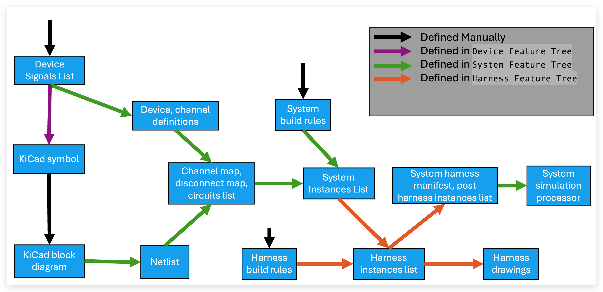
Part Numbering
Harnice is designed to work with git: every file format works well with git diff. However, even so, revisions of products are inevitable: if you release a part, start building it, then realize something needs to change, what do you do?
graph LR
A[change in design required] --> B{change in form/fit/function?};
B -->|Yes| C[new revision<br/>ABC-123-rev2];
B -->|No| D[new part number<br/>ABC-124-rev1];Change in form, fit and function is a common way for engineers to draw the line between rolling a rev and rolling a part number.
Harnice bakes revisions into part numbers, allowing you to spend your time worrying about engineering, not configuration management.
Before you render a product, the CLI will force you to operate in a “rev folder”. Revision history and statuses of a product is stored in a csv, and Harnice will not render a revision if the "status" column is not blank. That column is where you can record if a revision has been released, superseded, obsoleted, etc.
Mapping Vocabulary
Mapping vocabulary

Net:
- Requirement that a harness must exist to connect some connectors together.
Harness:
- A harness is an assembly of connectors, cables, and other electrical components that connect multiple devices together. It is the physical item that is built and installed in a system.
Channel:
- A channel is a set of signals that transmit or receive one piece of information, power, etc. They have "channel_types" which define their attributes and compatibility with other channels, and contain a list of required signals (pos, neg)
Signal:
- A signal is a physical conductive part inside a connector of a device that facilitiates electrical interface with the outside world. A signal must be part of a channel and live inside a connector.
Circuit:
- A circuit is the requirement that there must exist an electrical path between two signals of connected devices. You can assign conductors or other electrical elements along it. Instances assigned along the circuit have "circuit ids" which represent the order in which the circuit passes through them.
Conductor:
- A piece of copper, sometimes contained in a cable. Has as many properties, appearances, as you need
Cable:
- A cable is a COTS or custom physical item, purchased by length, that contains electrical conductors, and are physically installed inside harnesses.
Less important terms
-
Contact:
- The metal parts of a connector that does the actual mating with the other connector, allows for termination to a wire. Can be pins, sockets, studs, terminals, etc.
-
Cavity:
- The hole in a connector that physically holds a contact
The Workflow
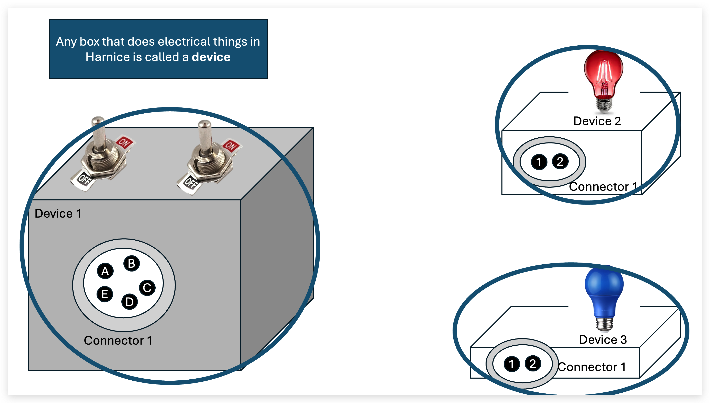
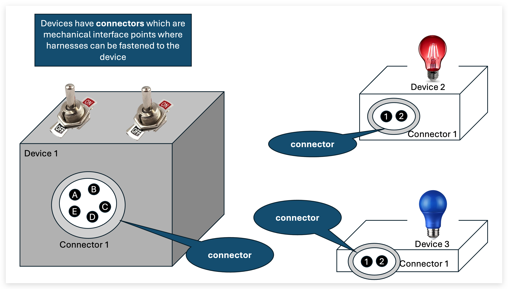
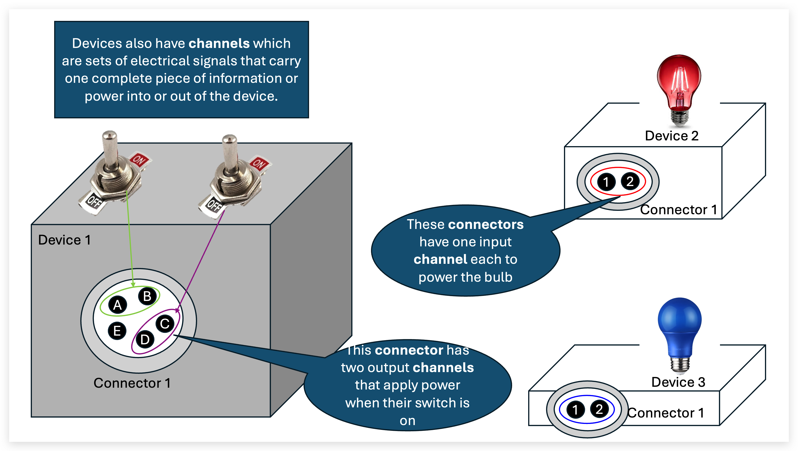
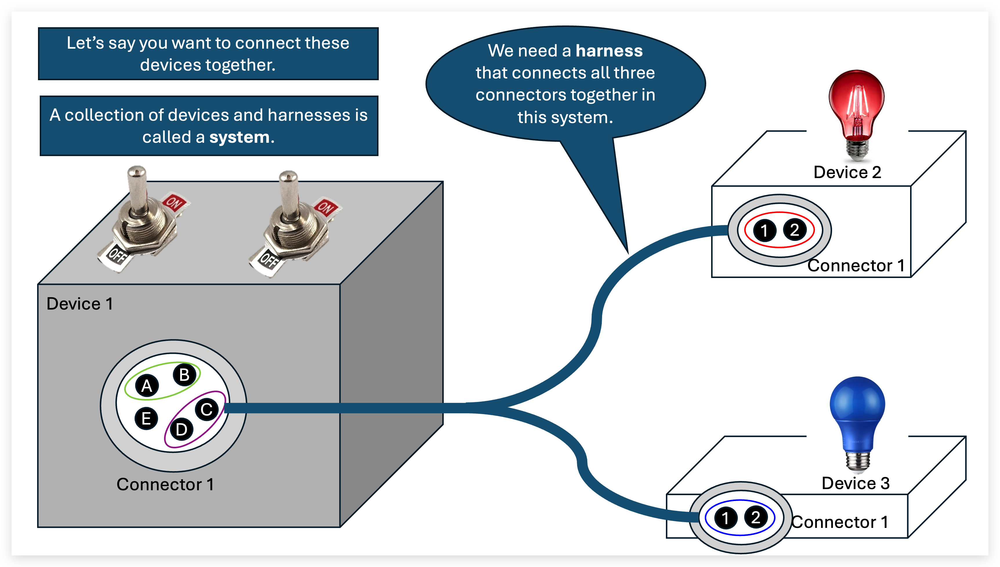
 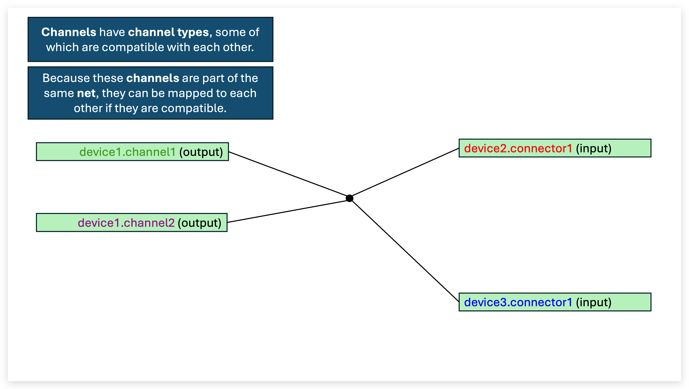
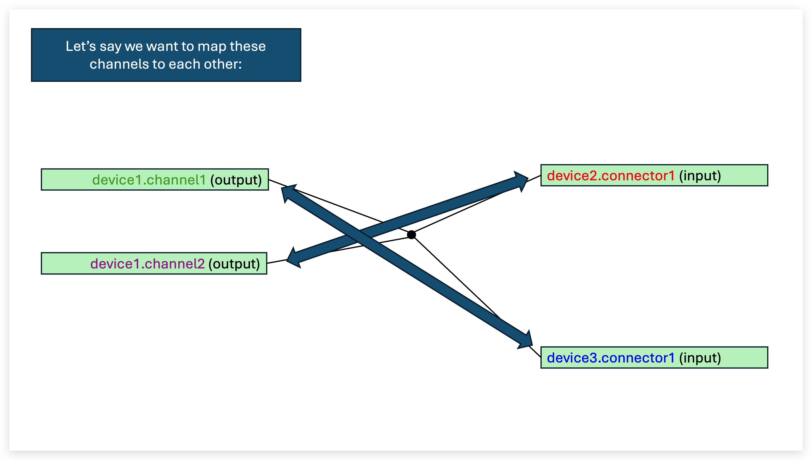
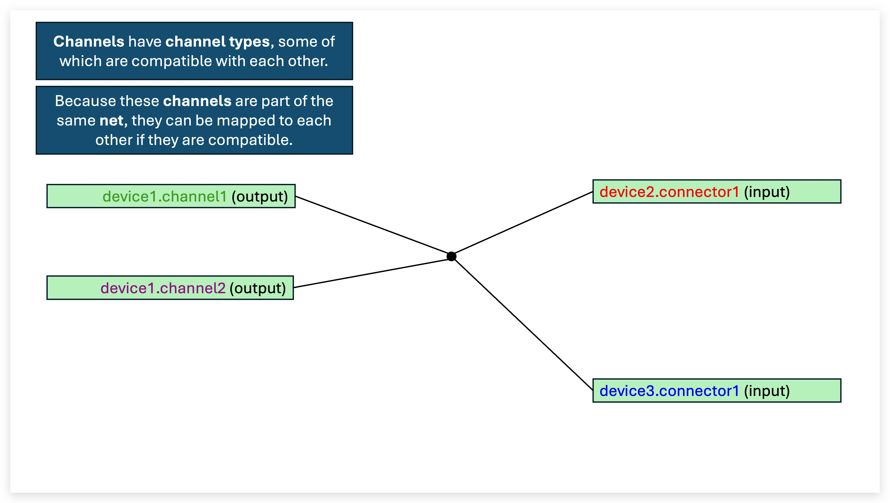
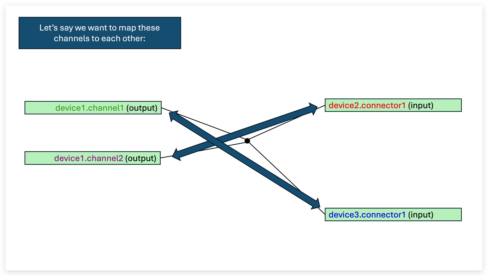
 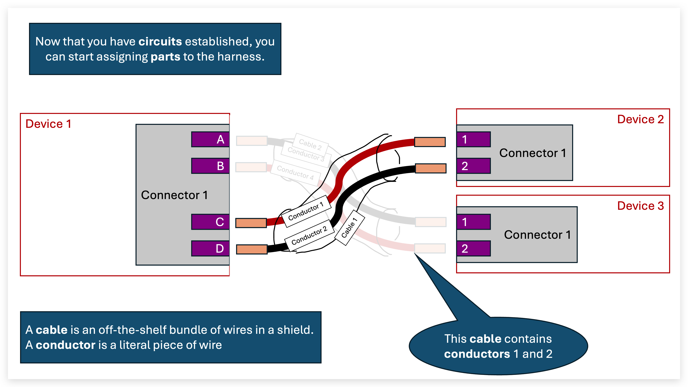
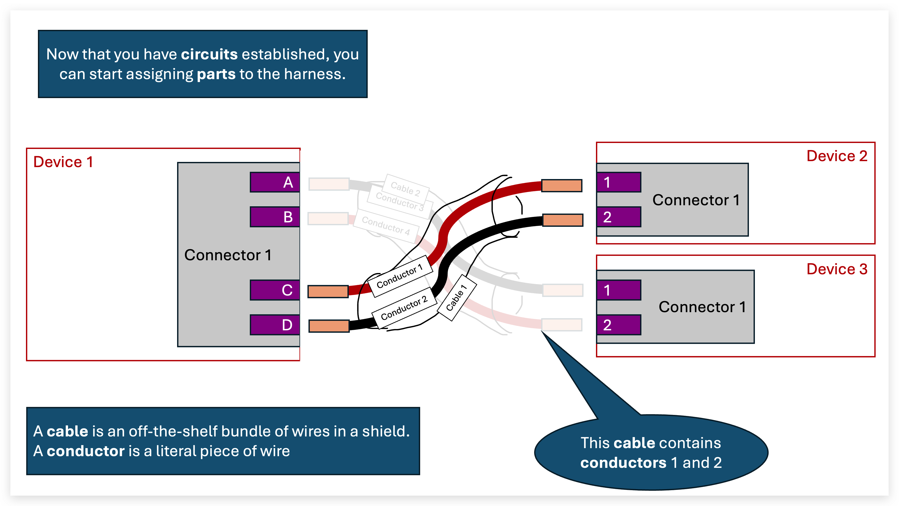